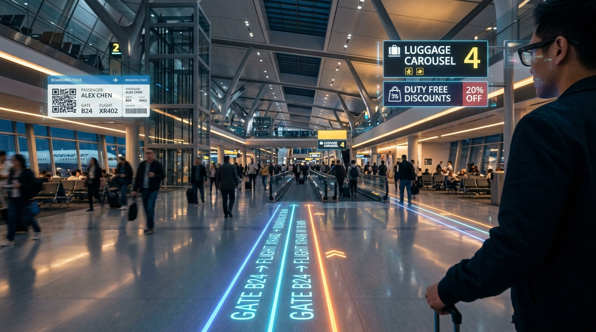
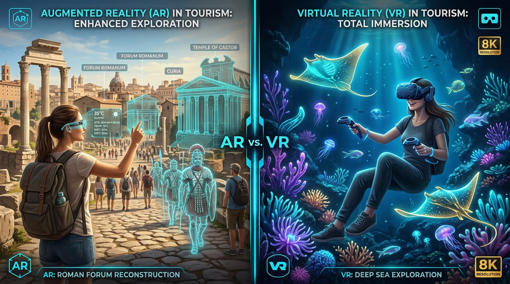
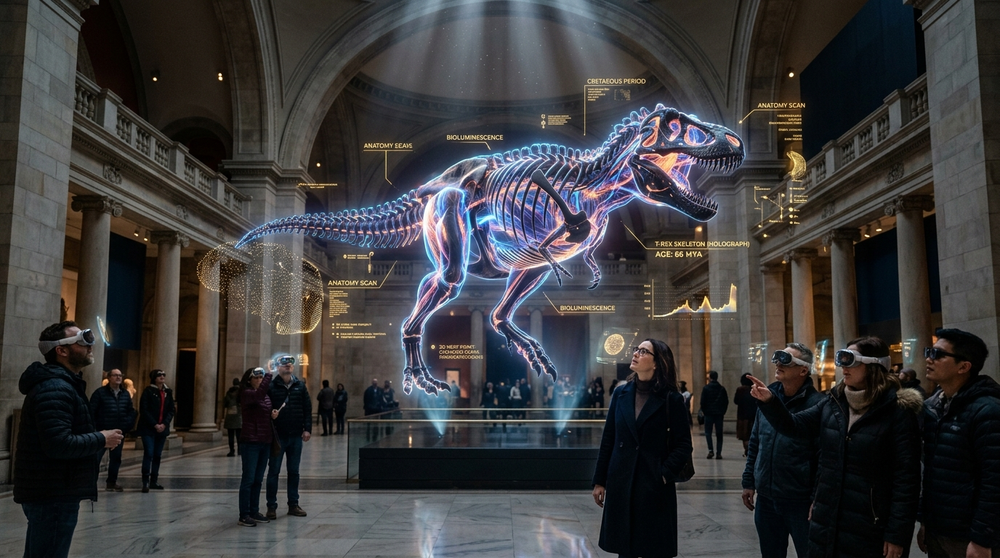
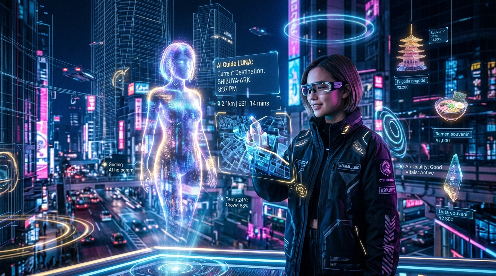
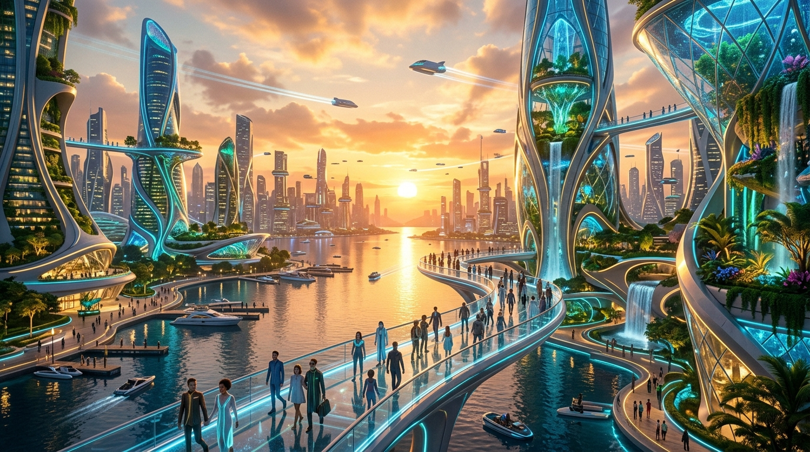

Augmented Reality vs Virtual Reality
Two distinct spatial architectures fundamentally altering human interaction with cultural heritage, physical travel, and simulated geography.
Contextual Spatial Overlay
Retains 100% of the physical environment while projecting millimeter-anchored digital twins, historical restorations, and intuitive navigational breadcrumbs into the traveler's natural optical field of view.
Infinite Synthetic Telepresence
Replaces sensory physical surroundings entirely with a photorealistic, 6DoF digital synthetic universe — teleporting users to fragile ecological reefs, outer space, or vanished ancient empires from home.
The Evolution of Spatial Tourism
From mechanical ceiling-mounted prototypes in 1968 to real-time neural 3D Gaussian Splatting and lightweight smart glasses.
The Sword of Damocles
Ivan Sutherland and Bob Sproull invent the first head-mounted optical see-through display with wireframe graphics and mechanical ceiling tracking.
Coining Augmented Reality
Tom Caudell and David Mizell at Boeing coin "Augmented Reality" for optical wire overlays. Jaron Lanier pioneers commercial VR data gloves at VPL Research.
Sensorama & Stereoscopic Trials
Morton Heilig’s multisensory Sensorama vision influences early commercial stereoscopy. Nintendo Virtual Boy brings tabletop monochrome stereoscopy to the public.
Oculus Rift & Pokémon GO
Palmer Luckey's Oculus Kickstarter ignites modern 6DoF consumer VR. Niantic’s Pokémon GO introduces 100M+ consumers to geocaching and mobile AR outdoor exploration.
ARKit, ARCore & Quest Standalone
Apple and Google release ARKit and ARCore, turning 2 billion smartphones into AR exploration devices. Meta Quest eliminates PC tether cables for standalone tourism.
Apple Vision Pro & NeRF Radiance
Pancake optics, dual 4K Micro-OLED, sub-millimeter eye & hand tracking. Neural Radiance Fields (NeRF) allow photorealistic 3D cultural heritage capture from drone imagery.
Meta Orion & 3D Gaussian Splatting
Under 70-gram holographic smart glasses with 70° FOV waveguides. 3DGS renders photorealistic historical ruins at 120 FPS. GenAI multimodal spatial guides guide tourists in real-time.
The Neural Spatial Computing Engine
Seven synergistic hardware and algorithmic pillars enabling sub-millimeter localization, photorealistic capture, and edge-rendered tourism.
Simultaneous Localization & Mapping (SLAM)
Visual-Inertial SLAM continuously constructs a 3D geometric map of unmapped environments while simultaneously tracking the traveler's precise 6DoF position without relying on GPS, enabling seamless indoor museum and underground tomb navigation.
Transcending Physical Boundaries
Six foundational paradigms where spatial technologies overcome geographical, economic, and physical barriers in global exploration.
Zero-Distance Exploration
Eliminates physical transit constraints. Travelers explore remote wonders like Machu Picchu, Antarctica, or the Mariana Trench instantly from anywhere on Earth.
Radical Cost Reduction
Abolishes thousands of dollars in flights, luxury lodging, and entry visas. Students, underprivileged communities, and global learners gain access to high-tier world wonders.
Universal Physical A11y
Individuals with mobility impairments, wheelchair users, and elderly citizens can traverse steep Mayan temples, Venetian canals, and Alpine trails without physical impediments.
Heritage Preservation
Sub-millimeter photogrammetric and NeRF digital twins capture monuments threatened by climate erosion, natural earthquakes, and regional conflict for future generations.
Contextual Navigation
Eliminates anxiety and disorientation in complex international transit hubs, mega-airports, and labyrinthine historic old towns using world-anchored 3D optical pathlines.
Eco-Conservation
Shields endangered ecological sites (Galapagos, fragile coral barriers, delicate limestone caverns) from human erosion while sustaining regional economies via virtual ticketing.
Real-World Spatial Applications
Seven practical operational domains where Augmented and Virtual Reality are transforming destination management and traveler experiences today.

Spatial Wayfinding & Transit Guidance
Anchored arrows on floors, live landmark identification, and interactive subway interchange routing across multi-level metropolises.

Historical Heritage Reconstructions
Overlaying digitally restored colonnades, statues, and historical figures directly over existing ruins in Athens, Rome, and Hampi.

Museums & Volumetric Exhibits
Uncaged, life-sized holographic specimens and artifacts (King Tut, T-Rex anatomy) with conversational AI annotations and millimeter inspectability.
Hospitality & Pre-Booking Previews
Photorealistic 1:1 walk-throughs of resort overwater villas, cruise ship suites, and event ballrooms to eradicate booking uncertainty and disputes.
Airports & High-Capacity Hubs
Dynamic flight gate redirection, real-time luggage carousel navigation, and duty-free personalized holographic offers anchored to terminal walls.

Real-Time Spatial Translation
Instant holographic translation of foreign street signs, ancient museum hieroglyphics, and menu ingredients natively rendered in the traveler's font.

Eco-Tourism & Remote Sanctuaries
High-definition synthetic diving expeditions in protected coral reefs, Amazon rainforest canopy treks, and polar ice dives without carbon emissions.
AR vs VR: Direct Architectural Comparison
Contrasting the spatial computing spectrum across immersion, situational awareness, optics, and practical travel usage.
AUGMENTED REALITY (AR)
Digital Augmentation Over Physical WorldVIRTUAL REALITY (VR)
100% Synthetic Immersion & TelepresenceTransformative Benefits vs Engineering Challenges
A balanced evaluation of the radical industry advantages against the critical optical, bandwidth, and social hurdles.
Adaptive Hyper-Personalized Narratives
AI tourist engines adjust story depth, language, and interactive pacing dynamically for history scholars, families with young children, or speed travelers.
Carbon-Neutral Global Exploration
Substitutes exploratory and conference travel with zero-emission telepresence, saving an average of 1.8 tons of CO2 per international trip replaced.
Decoupled Revenue Generation
Heritage sites monetize global audiences via virtual ticketing, digital holographic souvenirs, and VIP remote masterclasses regardless of physical capacity caps.
Pre-Trip Booking Confidence (+300%)
1:1 spatial walk-throughs of remote hotel rooms and cruises virtually eliminate traveler booking disputes, cancellations, and misleading promotional imagery.
Outdoor Sunlight & Photonic Bleed
Bright outdoor sunlight (10,000+ lux) washes out holographic waveguide overlays.
Multi-Gigabyte Scene Streaming
Photorealistic 3DGS monument models require massive streaming bandwidth without exceeding the 15.6ms cybersickness threshold.
Thermal Dissipation & Battery Weight
Lightweight glasses (<70g) cannot sustain heavy on-board GPU rendering beyond 90 minutes before overheating on a tourist's nose bridge.
Public Surveillance & GDPR Privacy
Continuous outward-facing spatial video capture in crowded historical piazzas creates legal friction and unauthorized recording issues.
The Future of Spatial Tourism
Where embodied multimodal AI companions, neural smart glasses, full-body haptics, and decentralized digital twin cities converge.
Embodied Multimodal AI Guides
Holographic conversational companions speaking 120+ languages with emotional nuance, answering spontaneous archaeological questions in real-time.
Neural Smart Glasses
All-day featherweight optical waveguides projecting directly onto the retina with micro-gesture EMG wristband control replacing the smartphone.
FOV: 70° • 18-Hour Battery LifeFull-Body Thermal & Force Haptics
Vests and exoskeletons simulating the cold misty spray of Niagara Falls, the heat of the Sahara Desert, and rough stone texture of Roman columns.
Binaural Spatial Soundscapes
Real-time room acoustic simulation rendering echoes bouncing off stone cathedrals, whispering historic voices from precise 3D physical coordinates.
Head-Related Transfer Functions (HRTF)Spatial Web 3.0 & Open VPS
Open geospatial protocols enabling persistent, shared holographic monuments across any hardware ecosystem without proprietary corporate lock-in.
Universal Scene Description (OpenUSD)Holographic Digital Souvenirs
3D interactive collectible artifacts, stamps, and volumetric time-capsules minted upon visiting physical sites, viewable inside home spatial displays.
Soulbound Proof-of-Visit ArtifactsGlobal Tourism Metaverse
Interconnected persistent virtual worlds where families across continents meet inside photorealistic digital twins to travel, hike, and socialize together.
Millions of Concurrent Telepresent TravelersLive Digital Twin Cities
Dynamic millimeter city replicas synced with live IoT weather, foot-traffic sensors, and historical timeline scrubbers allowing 2,000-year urban reviews.
Live Satellite & Sensor Telemetry Sync
Reality is No Longer a Limit.
It is a Canvas.
“Travel is no longer confined by physical geography. Spatial computing and neural graphics transform reality itself into an infinite canvas — preserving the irreplaceable wonders of our past, democratizing the exploration of our present, and unlocking boundless horizons for humanity’s future.
Hybrid Convergence
Physical travel and digital augmentation merge into one seamless cognitive reality.
Radical Inclusivity
Zero barrier exploration for every human regardless of mobility or financial status.
Heritage Eternity
Millimeter digital twins preserve disappearing human marvels against time and climate.
Low-Carbon Future
Sustainable exploratory tourism aligned with planetary environmental equilibrium.